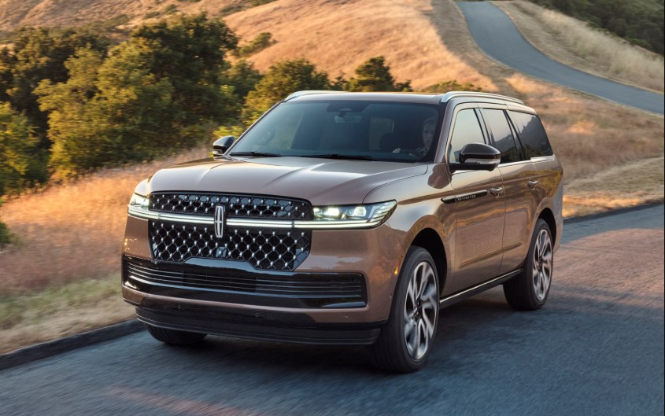

Black Label
- Equipamiento 800A.
- Rines de aluminio de 24” color cobre radiante.
- Neumáticos P285/40R24 all-season.
- Tres filas de asientos.
- Asientos de lujo en piel con memoria y calefacción delantera.
Obsidiana · 3.5L GTDI V6 · Interior Lighten Theme
